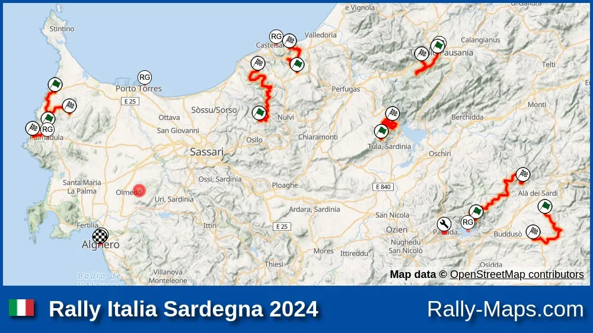
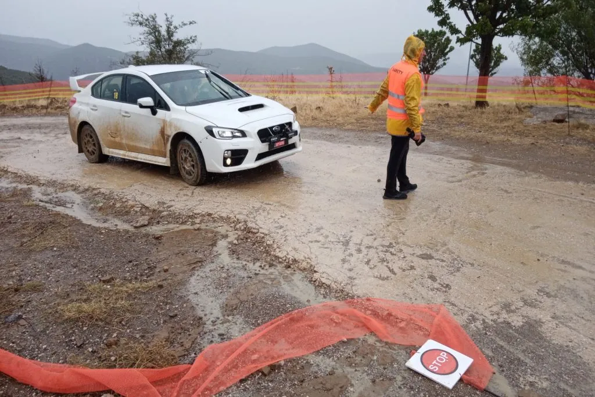
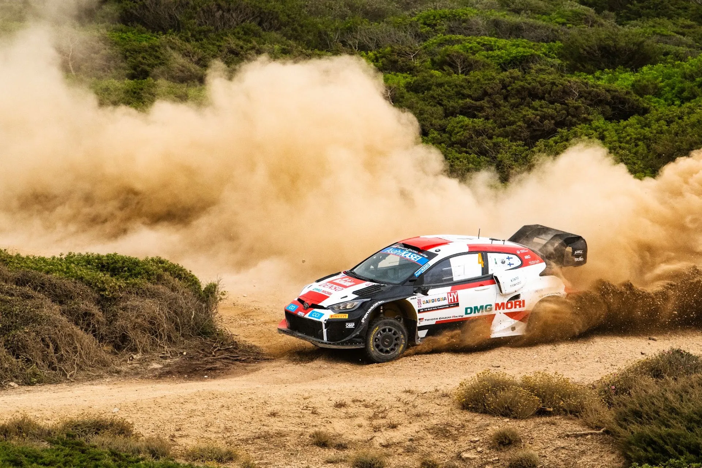
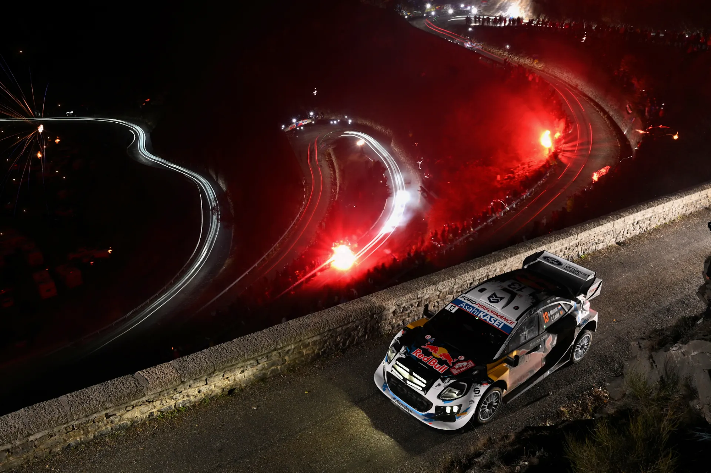
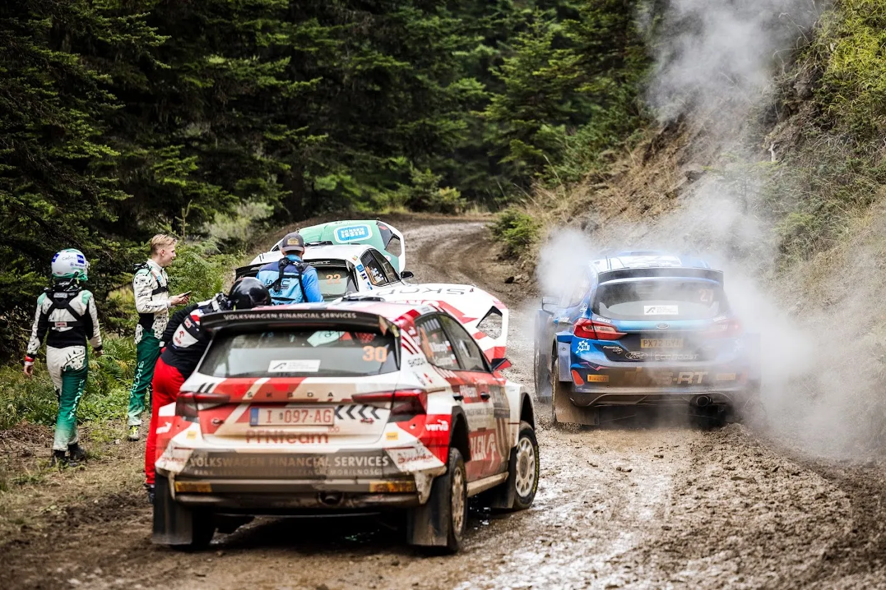

Let's take a closer look at the WRC's New Rally format for 2025
It was last Tuesday when I got a notification on my phone that Rally Sardegna's Rally Guide had come out. "Alright", I said, "can't be anything too crazy in there". But there was, checking the itinerary, I saw the total and it was only 266km! Huh? Did I miss a day or something? Nope, that was it. After taking a closer look there was this quote by the organizers that intrigued me:
"The 21st Rally Italia Sardegna presents a compact route based on the new FIA guidelines from 2025, with only three days of racing."
So this 266km edition of Rally Sardegna, could be what the future WRC rallies will be like for the upcoming season. So, let's take a closer look at what this "48 hour Rally'' format is, and let's examine its positives and negatives.
A map of the 2024 edition of Rally Sardegna from Rally Maps. Check the full maps here

So let's start with what the thinking behind this new format is. The rally now starts a day later for everyone, and that's not just for the competitive section of the rally, but it also includes recce. So the crews and the teams have a day less of workload in the week. This is something that the drivers have pushed for, as they have 2 days of recce on top of the 4 (ish) days of the competitive rally. The teams shouldn’t be against it either because this would help them cut down on costs, which is something everyone is eager to do in this day and age. The Shakedown stage is now on Friday morning, with the actual rally starting on Friday afternoon. Saturday is the same deal as before, and same goes with Sunday, with the rally ending on Sunday afternoon. This more compact rally is not a first in the WRC, as it’s not dissimilar to the format of rallies we saw after the WRC returned during the pandemic in 2020.
Many people forget that Recce is a very important and time consuming part of every rally
In Sardegna we will also see the cloverleaf system gone (3 stages in the morning then the same 3 in the afternoon), with the organisers instead going for the 2x2 system, with 2 stages repeated twice in each loop. We saw this system last year in Rally Estonia, as well as in Sardegna again in 2022. My understanding is that the organizers would have used that system no matter what, so I don’t think this will be the standard for the upcoming season.

In 2022 the 2x2 system caused some trouble to the organizers, as it led to stage cancellations.

WRC Promoter Peter Thul talked to DirtFish about the trial of the new format in the Italian island, and gave us some interesting hints. He mentioned that this “48 format” isn’t going to be the norm in 2025, and that the Promoter wants some events to be more compact, like Sardegna, and others to be able to have more freedom with the amount of mileage they can have. If that’s something the promoter is serious about, then we could see rallies ranging from 270km to 370km next season (just a guess on the mileage), with “classics” like Safari, Monte and Acropolis being allowed to run above the previous limits, and other events being allowed to run with a more compact schedule.
A longer Rally Monte Carlo or a classic Safari would definitely be something to look out for, and would sweeten the pill for many when it comes to the more compact rallies

Now, for some negatives. The distance being so low is definitely something that has annoyed many. Rally Sardegna this year is 54 kilometres lower than its 2023 edition. What has also bothered many is that Sunday is again very short, with just 40km. With the new points system, 40km of stages giving out 12 points… It’s just disproportionate to the rest of the rally. And as for Friday, since there will only be one loop, the effect of road sweeping will change. Depending on the conditions we could see the championship leader lose out more, or gain in time compared to the previous format.
In 2022 the Acropolis Rally was the shortest, with 270km of stages ran, but that was because of extreme conditions that forced the organizers to alter the itinerary. Sardegna is shorter than that.
My thoughts? I don’t hate it per se… but I think there could be some improvements. And it’s unfair to judge something before it was tested (ring any bells???). Some ideas I have are firstly to make Sundays longer, perhaps ending a bit later like ERC, so that there can be a more fair allocation of points across the rally. Something else I would be in favour of would be the re-introduction of remote services, so that the rally organizers have more to play around with across the rally, thus giving us a greater variety in terms of stages, whether that is in a shorter, or longer event. And another thing I wouldn’t be against, would be for the events running under the more compact format to have a different approach for the starting order for Friday as well. For example the championship order is only ran for half of Friday (if there is a 2x2 format like Sardegna for example), or maybe a more radical idea, a return of the Qualifying stage, which is something that was used in 2012 and 2013 to determine the road order in the WRC, and it's still used in the ERC today.
What do you think of the new format, (or formats, if the one with the slightly longer rallies also materializes)? What would you tweak, what would you change. Let me know in the replies, I am sure there will be stuff I didn't think of while writing this. Written by Dimitris Theodorou
Pictures from the Red Bull Content Pool


Comments